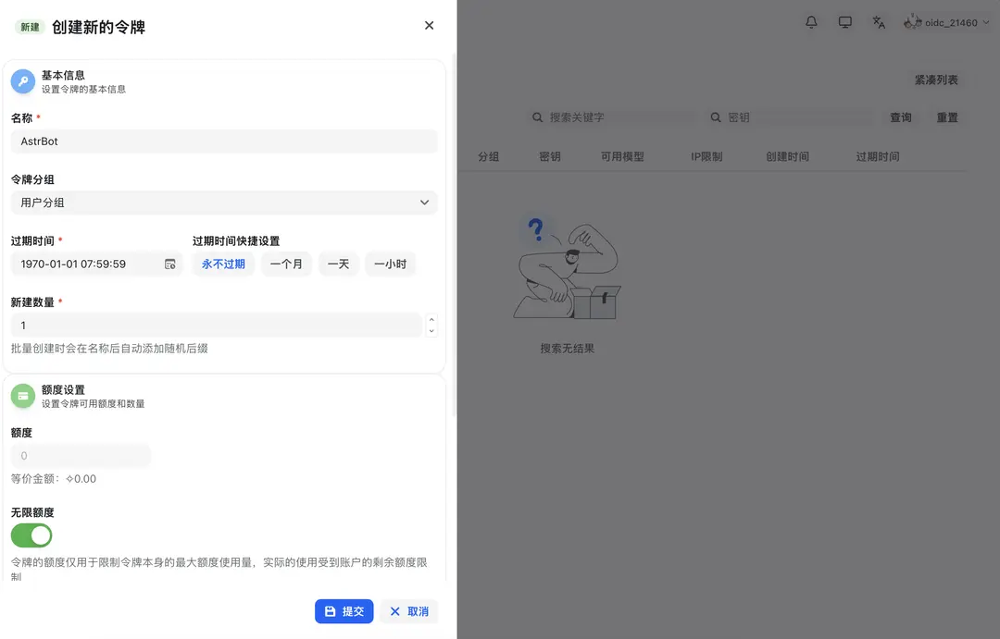
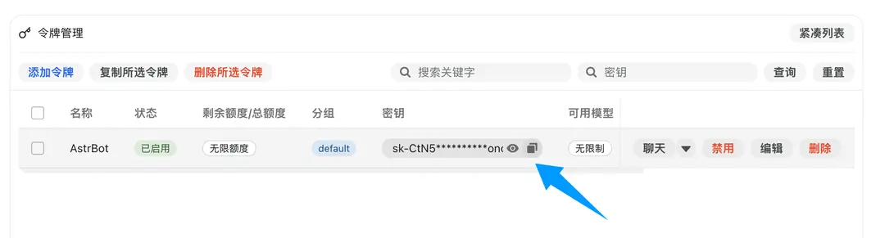
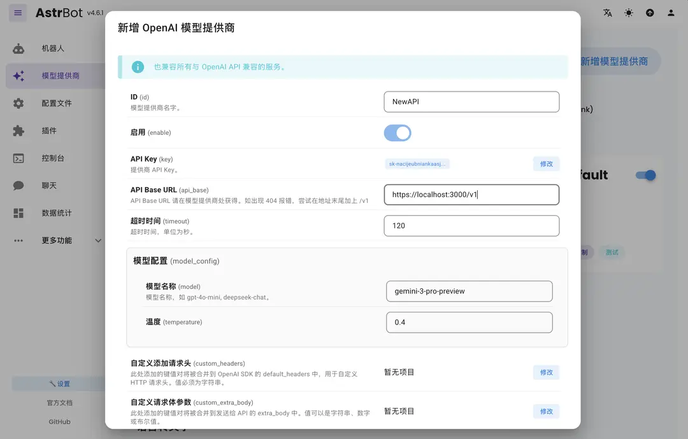
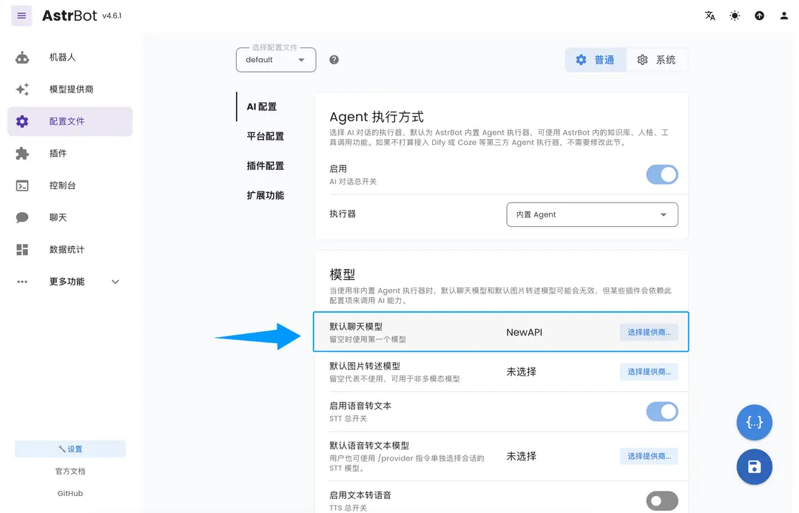

机器人
AstrBot 接入教程
完整复刻源站 AstrBot 教程密度：API Key、OpenAI 服务商、默认聊天模型和后台验证。
AstrBot 是一个开源的一站式 Agent 聊天机器人平台，可将大模型能力无缝接入 QQ、飞书、钉钉、企业微信等主流即时通讯软件，为个人、开发者和团队打造可靠、可扩展的对话式智能基础设施。无论是个人 AI 伙伴、智能客服、自动化助手，还是企业知识库，AstrBot 都能在你的即时通讯软件平台的工作流中快速构建生产可用的 AI 应用。
- 官方网站：https://astrbot.app
词元.fast API 接入方法
AstrBot 支持接入 词元.fast API 作为模型提供商，用户可以通过 词元.fast API来访问和使用各种 AI 模型服务。
配置步骤
获取 词元.fast API API Key 密钥
在词元.fast API 注册并登录后，点击上方导航栏的「控制台」，点击「令牌管理」，然后点击「添加令牌」按钮，创建一个新的 API Key 密钥，选择适当的权限，然后点击「创建」。

创建成功后，点击复制密钥按钮，复制生成的 API Key 密钥。

在 AstrBot 中配置 NewAPI 服务提供商
打开 AstrBot 管理面板，进入「模型提供商」页面，然后，点击「新增模型提供商」按钮。
词元.fast API 完美地支持了 OpenAI Chat Completion 和 Responses 接口，我们点击 「OpenAI」，进入 OpenAI 提供商的配置页面。
在弹出的对话框中，将 API Base URL 设置为 词元.fast API的接口地址，例如 https://ciyuan.fast/v1。
然后，将 API Key 填入「API Key」字段中，点击「保存」按钮。

然后点击保存，完成 NewAPI 提供商的配置。
应用服务提供商
进入「配置文件」页面，找到模型一节，将「默认聊天模型」修改为刚刚创建的 NewAPI 提供商，点击「保存」按钮。

至此，您已经成功配置了 词元.fast API 作为 AstrBot 的模型提供商。现在，您可以通过 AstrBot 来访问和使用 词元.fast API 提供的各种 AI 模型服务了。